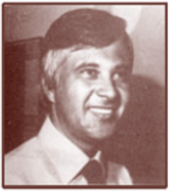
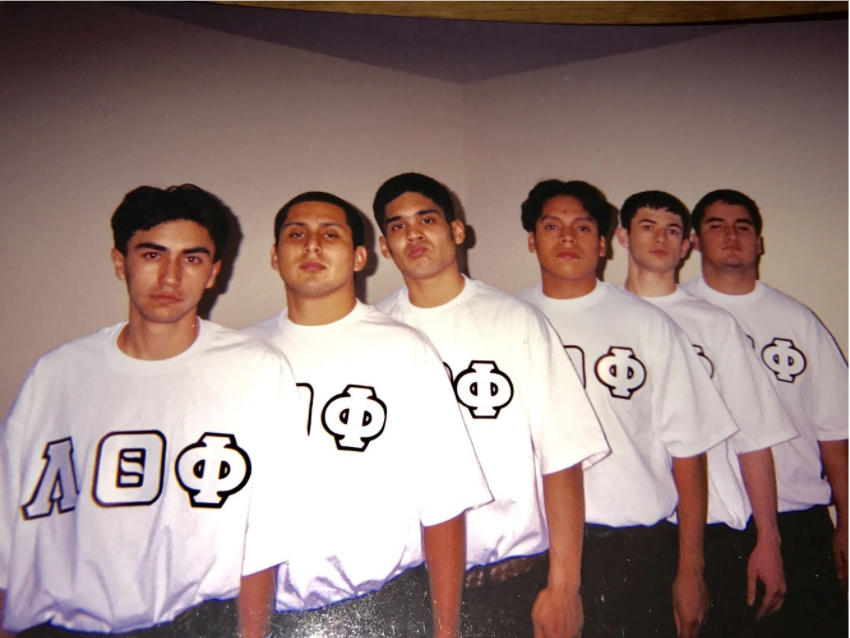

Lambda Theta Phi was founded by 14 Latino students at Kean College as a vehicle by which they would foster Latino unity and address inequities in the way Latinos were being treated on campus. The fraternity’s founding fathers received guidance and assistance from a faculty member, Cayetano Socarras, and a administrator, Jose Quiles who would become the organizations “fraternal fathers.”
Lambda Theta Phi, Latin Fraternity Inc. Founded December 1, 1975
Dr. Cayetano Socarras

Dr. Jose A. Quiles

The Sixth Sense
14 Founding Fathers